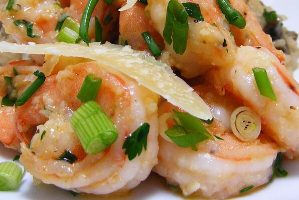

Shrimp Verde

Ingredients
- 2 tablespoons olive oil
- 2 cloves garlic, chopped
- ¼ cup chopped green onion
- 1 pound fresh shrimp, peeled and deveined
- ½ cup Italian flat leaf parsley, chopped
- ½ cup freshly grated Parmesan cheese
Steps
- Heat olive oil in a large skillet. Saute garlic and scallions briefly, but do not brown the garlic.
- Toss in shrimp and saute until pink and opaque in the center. Stir in parsley and heat through.
- Remove from heat and pour into a serving dish. Sprinkle with grated Parmesan cheese.